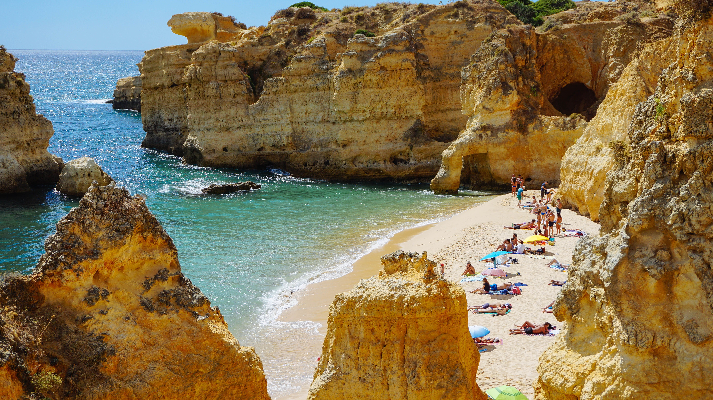

Observer
Repérez les oiseaux et découvrez leur habitat.
GUIDE DE VOYAGE
Un archipel à explorer, entre forêt et océan.
Un territoire imaginaire riche en paysages et en biodiversité.
le payasage est compse de plusieur colinne magnifique au couleur variante grace au plantation posé par d'anciens habitant au moyenne âges au vert rose et meme bleu on retrouve une utopie splendide

Repérez les oiseaux et découvrez leur habitat.
Suivez les sentiers au cœur de la forêt.
Échangez avec les habitants des villages côtiers.

Pour en savoir plus sur les océans, consultez le site NOAA Ocean Service.